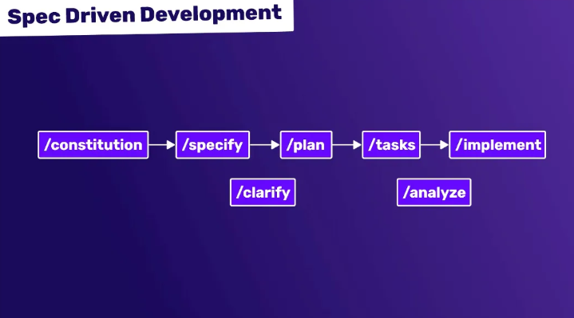

Гайд по API: Spec-Driven Development (Разработка через спецификацию)

Spec-Driven Development (SDD) — это методология разработки программного обеспечения, в которой спецификация (контракт) API является источником истины (Single Source of Truth). В отличие от классического подхода "сначала код, потом документация", здесь сначала создается или согласовывается спецификация (например, в формате OpenAPI/Swagger), и только затем на ее основе пишется код (как на бэкенде, так и на фронтенде).
Главная фишка SDD в том, что она позволяет командам (бэкенд, фронтенд, мобильные разработчики, AQA) работать параллельно, опираясь на единый, живой документ, который всегда актуален, потому что именно он управляет процессом разработки.
Ключевые концепции
Чтобы понять, как работает SDD, нужно разобраться с тремя основными ролями спецификации:
- Contract-First (Контракт в первую очередь): Подход, при котором написание кода начинается только после того, как спецификация API согласована со всеми стейкхолдерами (фронтенд, безопасность, тестирование).
- Single Source of Truth (Единый источник истины): Спецификация (файл
openapi.yamlилиproto) является единственным документом, описывающим API. Документация, моки (заглушки) и даже код валидаторов генерируются из нее автоматически. - Mock Server (Сервер-заглушка): Инструмент, который по спецификации мгновенно создает работающий фейковый API. Это позволяет фронтенд-разработчикам начинать интеграцию, даже пока бэкенд еще пишет код.
- Code Generation (Генерация кода): Автоматическое создание скелета контроллеров (для бэкенда), типов (TypeScript для фронтенда) или клиентских SDK на основе спецификации.
Структура спецификации (OpenAPI Example)
Спецификация обычно представляет собой файл в формате YAML или JSON. В ней описывается всё: эндпоинты, методы, заголовки, тела запросов, коды ответов и модели данных.
openapi: 3.0.0
info:
title: User API
version: 1.0.0
paths:
/users/{id}:
get:
summary: Get user by ID
parameters:
- name: id
in: path
required: true
schema:
type: integer
responses:
'200':
description: Successful response
content:
application/json:
schema: # <-- Это Single Source of Truth для модели данных
$ref: '#/components/schemas/User'
'404':
description: User not found
components:
schemas:
User:
type: object
properties:
id:
type: integer
name:
type: string
required:
- id
- name
Важно: В SDD эта спецификация лежит в репозитории и ревьюится на Pull Request'ах так же строго, как и обычный код. Изменение спецификации без обсуждения с фронтендом считается нарушением процесса.
Схема работы (Step-by-Step)
Процесс разработки фичи в парадигме SDD выглядит так:
- Анализ и проектирование: Команда (бэкенд, фронтенд, аналитик) обсуждает новую фичу. Вместо того чтобы сразу лезть в код, они идут в редактор спецификаций (Stoplight, Swagger Editor).
- Создание спецификации: Бэкенд-разработчик пишет или правит
openapi.yaml, описывая новый эндпоинт, структуру запроса и ответа. - Согласование (Review): Фронтенд-разработчик смотрит спецификацию. Если ему не хватает поля или неудобен формат даты, он отклоняет PR со спецификацией. Обсуждение идет на уровне структуры JSON, а не на уровне кода Python/Java.
- Генерация мок-сервера: После мержа спецификации CI/CD автоматически поднимает Mock Server. Фронтенд сразу же начинает писать код, отправляя запросы на этот мок-сервер, получая реалистичные ответы.
- Параллельная разработка:
- Бэкенд использует спецификацию для генерации скелета контроллеров (интерфейсов) и пишет бизнес-логику, следя за тем, чтобы код соответствовал контракту.
- Фронтенд использует спецификацию для генерации TypeScript-типов (типизация) или SDK. Он уверен, что когда бэкенд закончит, структура данных не поменяется.
- Тестирование контракта (Contract Testing): AQA или сам бэкенд запускают тесты, которые проверяют, что реальный работающий сервер соответствует спецификации (не возвращает лишних полей, правильно валидирует обязательные параметры).
Инструменты экосистемы SDD
| Инструмент | Назначение |
|---|---|
| OpenAPI (Swagger) | Самый популярный стандарт описания REST API. |
| AsyncAPI | Аналог OpenAPI, но для событийных архитектур (Kafka, WebSockets). |
| GraphQL Schema | Для GraphQL API спецификация — это сама схема (Type Definitions). |
| Protocol Buffers (Protobuf) | Используется в gRPC. Файл .proto — это спецификация. |
| Stoplight / Postman | Визуальные редакторы для дизайна API по принципу SDD. |
| Prism / Microcks | Инструменты для поднятия Mock-серверов на основе спецификации. |
| Dredd / Spectral | Инструменты для тестирования: проверяют, соответствует ли реальный API спецификации (Dredd) и линтинг спецификации (Spectral). |
Сравнение: Code-First vs Spec-Driven
| Критерий | Spec-Driven (Contract-First) | Code-First (Code-First) |
|---|---|---|
| Источник правды | Файл спецификации (YAML/JSON). | Код приложения (Java, Python, PHP). |
| Документация | Генерируется автоматически, всегда свежая. | Часто устаревает, требует ручного обновления (Swagger-аннотации в коде). |
| Параллельная разработка | Возможна (фронтенд работает на моках). | Затруднена (фронтенд ждет готового бэкенда). |
| Контроль изменений | Высокий. Любое изменение API видно в диффе спецификации. | Низкий. Изменение может "спрятаться" в глубине кода. |
| Скорость старта | Медленный старт (надо написать спецификацию). | Быстрый старт (написал код — оно работает). |
| Кто вносит изменения | Требует согласования между командами. | Бэкенд может изменить API незаметно для фронта. |
Тестирование в мире SDD (Для AQA)
Для тестировщика SDD — это рай, потому что неопределенность исчезает. Тестирование превращается в проверку соответствия спецификации.
-
Линтинг спецификации (Spectral):
- Проверяем, что спецификация написана по правилам (naming conventions, обязательность версионирования).
- Автоматически на CI:
spectral lint openapi.yaml.
-
Контрактное тестирование (Dredd / Pact):
- Dredd: Запускает реальный сервер и прогоняет все примеры из спецификации, проверяя статус-коды и структуру ответов.
dredd openapi.yaml http://localhost:8080 - Pact: Используется для микросервисов. Проверяет, что потребитель (фронтенд) и провайдер (бэкенд) понимают друг друга.
- Dredd: Запускает реальный сервер и прогоняет все примеры из спецификации, проверяя статус-коды и структуру ответов.
-
Генерация тестовых данных:
- Используя спецификацию, можно автоматически генерировать валидные и невалидные JSON-объекты для тестов (например, библиотеки
Faker+ схема JSON Schema).
- Используя спецификацию, можно автоматически генерировать валидные и невалидные JSON-объекты для тестов (например, библиотеки
-
Что проверять:
- Обязательность полей: Если в схеме поле
required: true, а бэкенд отдалnull— тест должен упасть. - Типы данных: Если в схеме
type: integer, а пришел"string"— тест падает. - Дополнительные поля: В SDD действует принцип "Сервер не должен отдавать поля, которых нет в спецификации" (это ломает строгую типизацию на клиенте). Нужно проверять, нет ли
extra fields.
- Обязательность полей: Если в схеме поле
🚀 Разбор важных практик SDD
- Версионирование API: Спецификация помогает реализовывать версионирование (например,
/v1/usersи/v2/users). Старую спецификацию можно хранить как артефакт. - Примеры (Examples): В спецификации обязательно нужно добавлять
examples. Это не просто документация, эти примеры используются инструментами тестирования (Dredd) и Mock-серверами (Prism) для генерации реалистичных ответов. $ref(Reusability): Используйте ссылки, чтобы не дублировать модели. Если структураUserизменится, она изменится везде автоматически.
❓ Вопросы с собеседований (ТОП-10)
Этот блок поможет вам подготовиться к собеседованию на позиции Manual/QA Automation и Junior/Middle Developer.
1. Что такое Spec-Driven Development и зачем он нужен?
Ответ: Это подход, при котором спецификация API создается до написания кода и является единым источником правды. Он нужен для синхронизации работы фронтенда и бэкенда, автоматической генерации документации и возможности тестировать контракты, исключая ошибки интеграции на ранних этапах.
2. Чем SDD отличается от Code-First?
Ответ: При Code-First бэкенд пишет код, а документация (Swagger) генерируется из аннотаций к коду. При SDD сначала пишется файл спецификации (OpenAPI), а код (скелет приложения) генерируется из него. SDD дает больше контроля над контрактом, но требует дополнительных усилий на начальном этапе.
3. Что такое Mock Server и зачем он нужен?
Ответ: Mock Server — это заглушка API, которая поднимается на основе спецификации. Она имитирует поведение реального сервера, возвращая примеры данных. Это позволяет фронтенд-разработчикам и тестировщикам начинать работу и писать автотесты до того, как бэкенд написал реальную бизнес-логику.
4. Как тестировать API, если используется SDD?
Ответ: Тестирование сводится к проверке соответствия контракту. Используются инструменты вроде Dredd, который прогоняет тесты из спецификации, или Pact для потребительского тестирования. Также обязательно тестируется, что сервер не возвращает лишних полей (strict mode) и правильно валидирует типы данных согласно схеме.
5. Что такое OpenAPI (Swagger)?
Ответ: Это спецификация (стандарт) для описания RESTful API. Она описывает эндпоинты, входные параметры, форматы запросов и ответов в машиночитаемом формате (YAML/JSON). Это "язык", на котором фронтенд и бэкенд договариваются о контракте.
6. Как в SDD обрабатывать breaking changes?
Ответ:
Breaking changes (удаление поля, изменение типа с int на string) не могут быть внесены просто так. В SDD процесс требует создания новой версии API (например, /v2/resource). Старая спецификация продолжает существовать для старых клиентов. Изменения проходят код-ревью, где архитектор проверяет совместимость.
7. Какую роль играет AQA в SDD?
Ответ: AQA в SDD перестает быть "нажимателем кнопок". Он участвует в ревью спецификации на этапе дизайна (проверяет тестируемость), настраивает контрактные тесты (Dredd) в CI/CD, а также может генерировать тестовые данные прямо из схемы спецификации, автоматизируя создание большого количества сценариев.
8. Что такое Spectral?
Ответ:
Это линтер для OpenAPI спецификаций. Он проверяет, соблюдены ли в файле openapi.yaml правила оформления (наличие operationId, правильные форматы response), а также кастомные правила команды (например, запрет на GET с телом запроса). Это помогает держать API в едином стиле.
9. В чем проблема подхода Code-First с аннотациями (Swagger annotations)?
Ответ:
Главная проблема в том, что контракт API "размазан" по коду в виде аннотаций (@ApiOperation, @ApiParam). Это приводит к дублированию кода и логики. Часто документация перестает обновляться, так как разработчики забывают править аннотации при изменении кода. Кроме того, для того чтобы показать контракт фронтенду, бэкенд должен сначала написать код и поднять сервер.
10. Как обеспечить, чтобы реальный сервер всегда соответствовал спецификации в CI/CD?
Ответ: Настраивается пайплайн, который после сборки приложения запускает Contract Tests (например, Dredd или Postman Newman). Dredd читает спецификацию, отправляет реальные запросы на запущенный инстанс приложения и проверяет, что ответы соответствуют описанию. Если соответствие нарушено (появилось лишнее поле), пайплайн падает, и деплой блокируется.
Заключение
Spec-Driven Development — это не просто про написание документации. Это про культуру инженерии, где на первом месте стоит коммуникация через контракт. Внедрение SDD позволяет ускорить разработку за счет параллелизации задач, повысить качество интеграции благодаря автоматической генерации тестов и навсегда забыть о проблеме "устаревшей документации". Для тестировщика это подход превращает хаос неопределенности в четкую систему проверок на основе машиночитаемого стандарта.